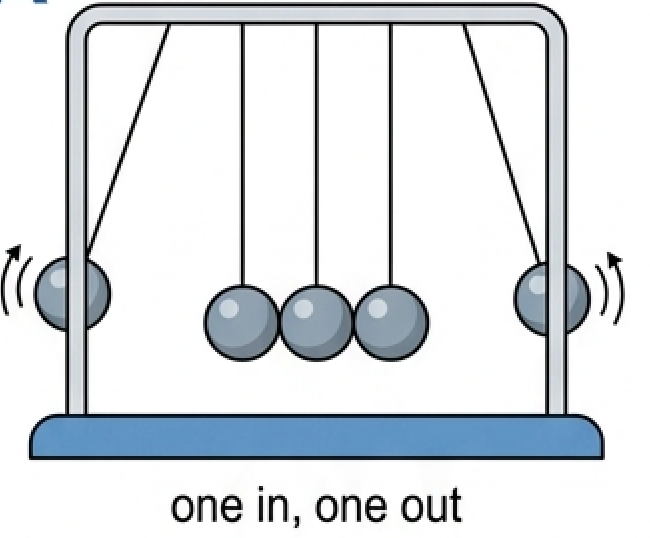
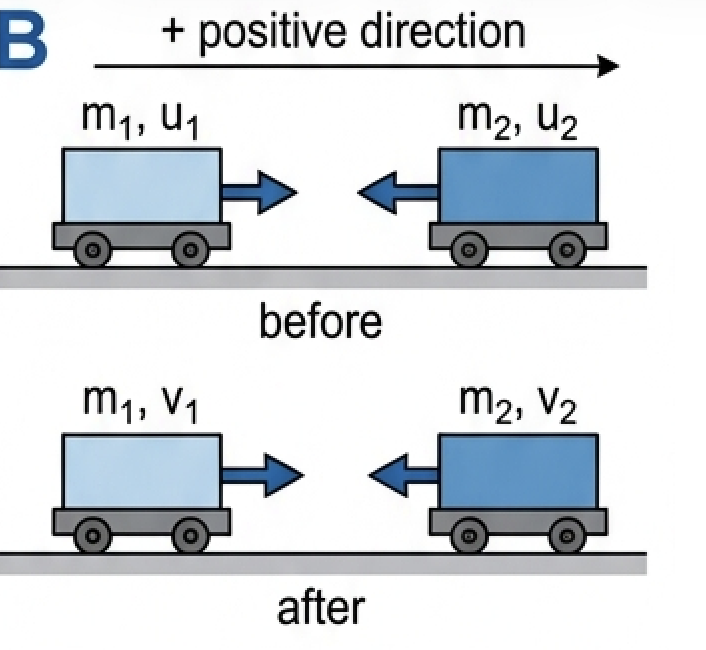
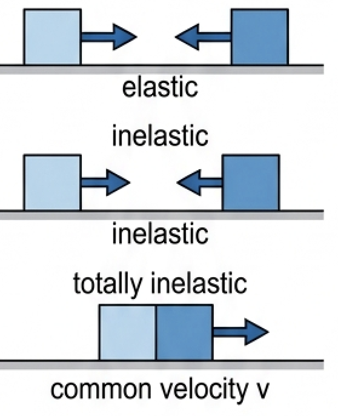
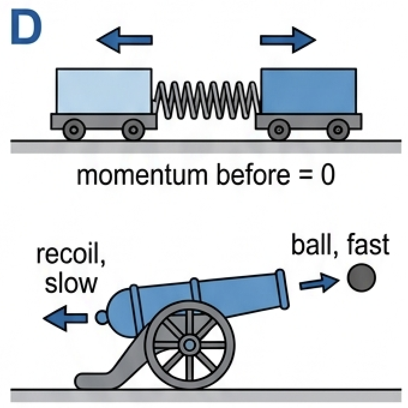
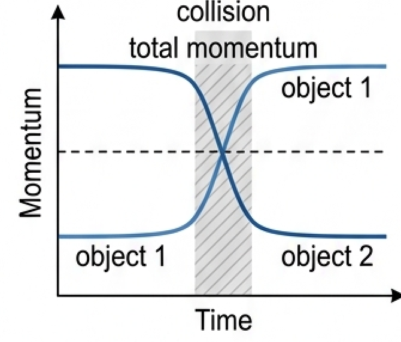
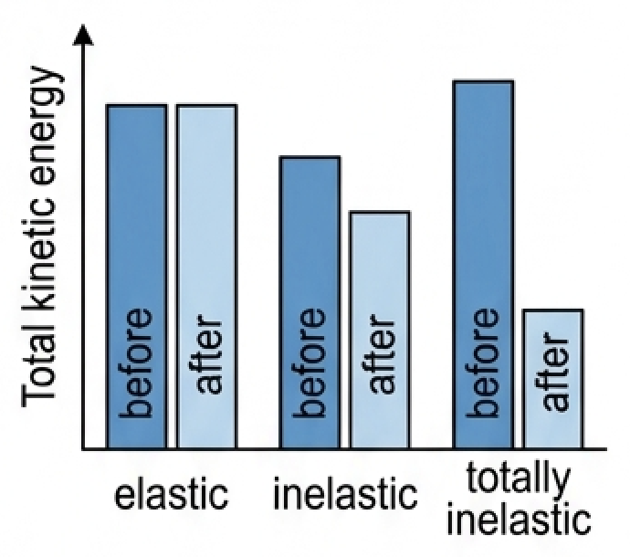
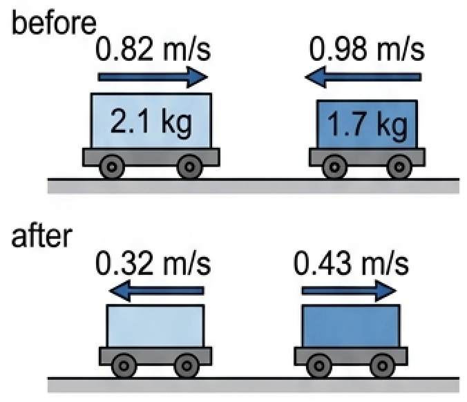
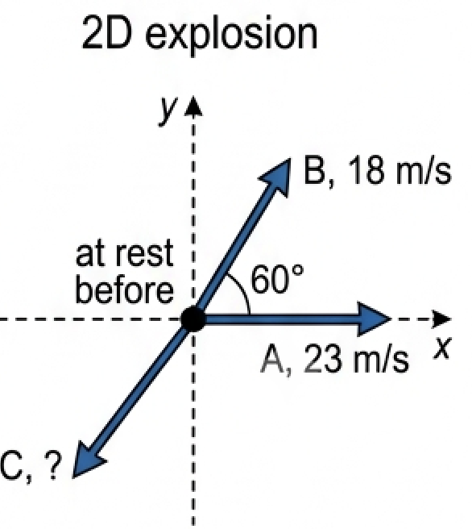

🎯 Hook – Newton's cradle
Lift one ball of a Newton's cradle and release it. One ball flies out the far side at the same speed. Lift two, and exactly two leave. Never three, never one at double speed. The cradle is obeying two conservation laws at once — momentum and kinetic energy — and only one outcome satisfies both.

📐 The law of conservation of momentum
When two objects interact, Newton's third law says the forces on them are equal and opposite, and they act for the same length of time. So the impulses are equal and opposite, and therefore the changes in momentum are equal and opposite: whatever one object gains, the other loses.
Stated in words: the total momentum of any system is constant provided no resultant external force acts on it. A system with no external force acting is called an isolated system. This law has no known exceptions — it holds for billiard balls, galaxies and subatomic particles alike.
For a one-dimensional collision between two bodies:

💥 Elastic, inelastic and totally inelastic collisions
Momentum is conserved in every collision. Kinetic energy is not. That difference is what classifies collisions.
| Type | Momentum | Kinetic energy | Typical example |
|---|---|---|---|
| Elastic | Conserved | Conserved | Steel spheres, gas molecules, alpha particle scattering |
| Inelastic | Conserved | Reduced — some transferred as thermal energy and sound | Most everyday collisions; a bouncing tennis ball |
| Totally inelastic | Conserved | Maximum possible loss | Objects that stick together: a bullet embedding in a block |
Perfectly elastic collisions are an idealisation for macroscopic objects, though the collision between two hard steel spheres comes close. They are genuinely common at the microscopic scale, between atoms and subatomic particles.

🧨 Explosions and recoil
An explosion in physics is any event where internal forces push a stationary system apart. The total momentum before is zero, so the total momentum after must also be zero: the fragments must carry equal and opposite momenta.
This is why a fired rifle kicks backwards — the recoil. The heavier object always moves more slowly: double the mass, half the speed. Unlike collisions, an explosion increases total kinetic energy, because chemical or elastic potential energy is released into the fragments.

📈 Graphs every examiner uses
| Graph type | Axes (X, Y) | Shape | What to read |
|---|---|---|---|
| Momentum–time for two colliding bodies | Time \(t\), momentum \(p\) | Two mirror-image steps during the contact time | The gains and losses are equal and opposite; the total is a horizontal line |
| Total momentum–time | Time \(t\), total \(p\) | Horizontal straight line throughout | Confirms momentum is conserved even while the individual momenta change |
| Kinetic energy bar chart | Before / after, \(E_{\text{k}}\) | Equal bars (elastic) or a shorter "after" bar (inelastic) | The missing height is energy transferred to thermal energy and sound |


✍️ Worked example – colliding trolleys

🚀 Real-world: propulsion
Every form of propulsion is an explosion in slow motion. A propeller throws water or air backwards; a jet engine ejects hot exhaust with more momentum than the air it took in; a rocket carries its own oxidant so it works in vacuum. In each case the vehicle gains exactly the momentum given to the fluid.
🚀 HL Extension – two-dimensional collisions
Momentum is a vector, so it is conserved independently in each direction. Resolve every velocity into \(x\) and \(y\) components and write one conservation equation for each:
Challenge: A stationary 5.0 g mass explodes into three parts. A (1.5 g) moves at 23 m s⁻¹ along \(x\); B (2.0 g) at 18 m s⁻¹ at 60° to A. Find the speed of C (1.5 g). (Answer: components 35 and 21 m s⁻¹ giving 41 m s⁻¹ at 31° to the −\(x\) direction)

⚠️ Trap corner – common mistakes
| Misconception | Correct view |
|---|---|
| Kinetic energy is conserved in all collisions | Only in elastic ones. Momentum is always conserved; kinetic energy usually is not. |
| Momentum is only conserved in elastic collisions | It is conserved in every interaction with no resultant external force, including explosions. |
| Speeds can just be added, ignoring direction | Momentum is a vector. Define a positive direction and use signed velocities. |
| An explosion violates conservation of momentum, since nothing was moving | Total momentum stays zero. The fragments carry equal and opposite momenta. |
| A ball thrown upwards loses momentum, so momentum is not conserved | The Earth is part of the system. Gravity is an external force on the ball alone, but ball + Earth conserve momentum together. |
Complete the statements:
(b) Explain, using Newton's laws, why the total momentum of two colliding objects is unchanged. [3]
(b) ✓ By Newton's third law the forces the two objects exert on each other are equal in magnitude and opposite in direction. ✓ They act for the same time, so the impulses are equal and opposite. ✓ Impulse equals change of momentum, so one object gains exactly what the other loses and the total is unchanged.
(a) Calculate the speed of the bullet before impact. [3]
(b) Show that the collision is not elastic. [2]
(b) ✓ Before: \(E_{\text{k}} = \tfrac12(0.00240)(261)^2 = 82\ \text{J}\). After: \(\tfrac12(0.6524)(0.960)^2 = 0.30\ \text{J}\). ✓ Almost all the kinetic energy has been transferred to thermal energy and sound, so the collision is inelastic.
(a) Discuss whether the student is correct. [3]
(b) A trolley on a friction-free track is loaded with sand falling vertically into it. Explain why the trolley slows down. [3]
(b) ✓ The sand adds mass to the trolley but no horizontal momentum. ✓ Horizontal momentum \(mv\) is conserved as no horizontal external force acts. ✓ Since \(m\) increases and \(mv\) is constant, \(v\) must decrease.